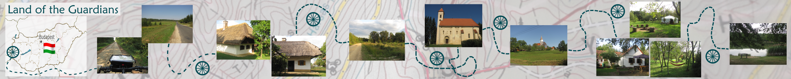

Entdecken Sie die Őrség, und bauen Sie Ihre eigene Fahrradtour auf!

Start
Routenplaner
Bildgalerie
Nutzbare Infos
Kontakt
Sprachauswahl:
Deutsch
Magyar
Routenplaner
Startpunkt
Weg finden
Berechne kürzeste Weg + maximum
km
Nur Asphaltwege suchen
Routeaufbau einschalten
<<
>>
Startpunkt:
-
Endpunkt:
-
Lange:
-
Davon Asphalt:
-
Anstieg:
-
Zur Route hinzugeben
Bis hier löschen
Routeaufbau neustarten
Zeige
aktuelle
gesamte Strecke an
KML herunterladen